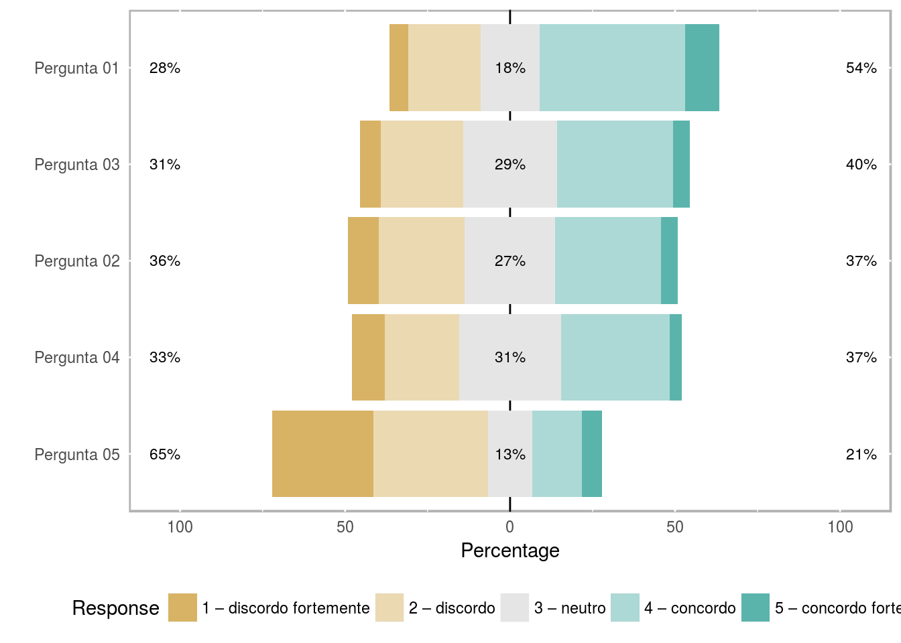
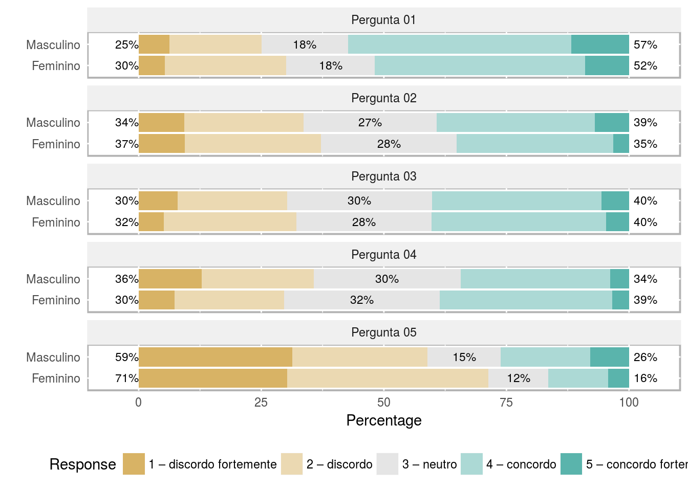

Artigos
O que é um cientista de dados?
Vamos aqui tentar reponder está pergunta, afinal o que é um cientista de dados?
Antes de responder o que é um cientista de dados vamos definir a palavra cientista e dados.
Um cientista, em um sentido mais amplo, refere-se a qualquer pessoa que exerça uma atividade sistemática para obter conhecimento. Em um sentido mais restrito, cientista refere-se a indivíduos que usam o método científico.
Dados são um conjunto de valores ou ocorrências em um estado bruto com o qual são obtidas informações com o objetivo de adquirir benefícios. Existem dois tipos de dados: estruturados e não estruturados. Os dados estruturados, que são dados formatados, organizados em tabelas - linhas e colunas - e são facilmente processados, geralmente é utilizado um sistema gerenciador de banco de dados para armazenar esse tipo de dado, um exemplo são os dados gerados por aplicações empresariais. Os dados não estruturados não possuem uma formatação específica e são mais difíceis de serem processados. Por exemplo, mensagens de email, imagens, documentos de texto, mensagens em redes sociais. SHRIVASTAVA; SOMASUNDARAM (2009)
Logo um cientista de dados são aqueles profissionais que conseguem aplicar as técnicas da ciência em bases de dados estruturados ou não.
De um modo geral, a formação em ciência de dados atribui grande ênfase a habilidades estatísticas, matemáticas e computacionais, incluindo programação e modelagem avançada. Abaixo segue alguns links para saber mais.https://www.ecommercebrasil.com.br/artigos/o-que-e-ciencia-de-dados-e-porque-ela-e-importante-para-o-seu-negocio/
https://www.sas.com/pt_br/insights/analytics/cientistas-de-dados.html
http://hbrbr.uol.com.br/cientista-de-dados-o-profissional-mais-cobicado-do-seculo-21/
O que é Psicometria
A Psicologia é a ciência que estuda o comportamento humano e seus processos mentais, que passam pela sensação, emoção, percepção, aprendizagem, inteligência. De acordo com Laurentine (2011) as ciências do homem têm sugerido a possibilidade de se encontrar um mínimo de regularidade no fenômeno psicológico. Mas, tais como as da natureza, as regularidades do fenômeno psicológico são falíveis ou probabilísticas.
Uma área da psicologia que faz vinculo entre as ciências exatas, principalmente a estatística é a psicometria. Segundo Pasquali (2009): “A psicometria fundamenta-se na teoria da medida em ciências para explicar o sentido que têm as respostas dadas pelos sujeitos a uma série de tarefas e propor técnicas de medida dos processos mentais.”
A psicometria consiste em um conjunto de técnicas utilizadas para mensurar, de forma adequada e comprovada experimentalmente, um conjunto de comportamentos que se deseja conhecer melhor. Por meio de testes cuja mensuração é feita atráves de repostas que o indivíduos fornecem aos itens os psicometristas buscam explicar os comportamentos e a optadões humanas. Neste sentido duas são as teorias para tal fim. A Teoria Clássica dos Testes (TCT) e a Teoria de Resposta ao Item (TRI).
De acordo com Pasquali (2009), a TCT se preocupa em explicar o resultado final total, isto é, a soma das respostas dadas a uma série de itens, expressa no chamado escore total. Enquanto a TRI tem como objetivo avaliar a habilidade do indivíduo de acordo com as resposta dadas a cada item, qual é a probabilidade e quais são os fatores que afetam esta probabibilidade de cada item individualmente ser anotada. Enfatiza-se que a TRI compreende modelos para avaliar traços latentes.
De acordo com Andrade (2000) a Teoria de Resposta ao Item propõe modelos para traços latentes ou seja, caracterı́sticas do indivı́duo que não podem ser observadas diretamente. Esse tipo de variável deve ser inferida a partir da observação de variáveis secundárias que estejam relacionadas a ela. O que esta metodologia sugere são formas de representar a relação entre a probabilidade de um indivı́duo dar uma certa resposta a um item e seus traços latentes, proficiências ou habilidades na área de conhecimento avaliada.
Análise de Pesquisa com Escala do Tipo Likert
silvio
13 de outubro de 2017
Escala Likert
A escala de Likert é uma escala psicométrica das mais conhecidas e utilizada em pesquisas de opinião, já que pretende registrar o nível de concordância ou discordância com uma declaração dada.
Ao contrário das perguntas sim/não, a escala de Likert nos permite medir as atitudes e conhecer o grau de conformidade do entrevistado com qualquer afirmação proposta.
Esta escala tem seu nome devido à publicação de um relatório explicando seu uso por Rensis Likert.
Exemplo de Escala Likert
Exemplo 1
Item - Estou satisfeito com minha remuneração.
| Ordem | Categoria |
|---|---|
| 1 | discordo fortemente |
| 2 | discordo |
| 3 | neutro |
| 4 | concordo |
| 5 | concordo fortemente |
Exemplo 2
Item - Meu trabalho prejudica a minha saúde.
| Ordem | Categoria |
|---|---|
| 1 | discordo totalmente |
| 2 | discordo em grande parte |
| 3 | discordo em parte |
| 4 | neutro |
| 5 | concordo em parte |
| 6 | concordo em grande parte |
| 7 | concordo totalmente |
Análise descritiva utilizando o pacote likert
LIKERT
Um pacote do R para análise e visualização de itens com escala do tipo likert
http://jason.bryer.org/likert/
Exemplo: Pesquisa de Qualidade de Vida no Trabalho - QVT
Amostra de tamano n = 1148
Quantidade de itens = 44
# Pacotes para ler dados em planilhas do excel
library(readxl)
# pacotes para manipular dados
library(plyr)
# pacotes para análide de dados do tipo likert
library(likert)## Loading required package: ggplot2## Loading required package: xtable## Warning: replacing previous import by 'plyr::llply' when loading 'likert'Lendo arquivos de dados e avaliando apenas os 10 primeiros itens
dados <- read_excel("~/dados.xlsx")
dadosQVT<- dados[,2:11]
head(dadosQVT)## # A tibble: 6 x 10
## item1 item2 item3 item4 item5 item6 item7 item8 item9 item10
## <dbl> <dbl> <dbl> <dbl> <dbl> <dbl> <dbl> <dbl> <dbl> <dbl>
## 1 4 4 2 3 2 3 4 3 5 3
## 2 4 4 4 4 1 5 5 5 5 4
## 3 4 3 4 3 4 2 1 1 4 3
## 4 3 3 3 4 3 4 3 3 4 4
## 5 1 4 4 3 2 4 4 4 4 2
## 6 5 3 2 1 1 5 5 5 3 2Inserindo Label nas escalas
dadosQVT <- data.frame(lapply(dadosQVT, factor, ordered=TRUE,
levels=1:5,
labels=c("1 – discordo fortemente",
"2 – discordo",
"3 – neutro",
"4 – concordo",
"5 – concordo fortemente")))
head(dadosQVT)## item1 item2 item3
## 1 4 – concordo 4 – concordo 2 – discordo
## 2 4 – concordo 4 – concordo 4 – concordo
## 3 4 – concordo 3 – neutro 4 – concordo
## 4 3 – neutro 3 – neutro 3 – neutro
## 5 1 – discordo fortemente 4 – concordo 4 – concordo
## 6 5 – concordo fortemente 3 – neutro 2 – discordo
## item4 item5 item6
## 1 3 – neutro 2 – discordo 3 – neutro
## 2 4 – concordo 1 – discordo fortemente 5 – concordo fortemente
## 3 3 – neutro 4 – concordo 2 – discordo
## 4 4 – concordo 3 – neutro 4 – concordo
## 5 3 – neutro 2 – discordo 4 – concordo
## 6 1 – discordo fortemente 1 – discordo fortemente 5 – concordo fortemente
## item7 item8 item9
## 1 4 – concordo 3 – neutro 5 – concordo fortemente
## 2 5 – concordo fortemente 5 – concordo fortemente 5 – concordo fortemente
## 3 1 – discordo fortemente 1 – discordo fortemente 4 – concordo
## 4 3 – neutro 3 – neutro 4 – concordo
## 5 4 – concordo 4 – concordo 4 – concordo
## 6 5 – concordo fortemente 5 – concordo fortemente 3 – neutro
## item10
## 1 3 – neutro
## 2 4 – concordo
## 3 3 – neutro
## 4 4 – concordo
## 5 2 – discordo
## 6 2 – discordoColocando a redação nos itens
dadosQVT <- rename(dadosQVT, c(
'item1'='Pergunta 01',
'item2'='Pergunta 02',
'item3'='Pergunta 03',
'item4'='Pergunta 04',
'item5'='Pergunta 05',
'item6'='Pergunta 06',
'item7'='Pergunta 07',
'item8'='Pergunta 08',
'item9'='Pergunta 09',
'item10'='Pergunta 10'
))
head(dadosQVT)## Pergunta 01 Pergunta 02 Pergunta 03
## 1 4 – concordo 4 – concordo 2 – discordo
## 2 4 – concordo 4 – concordo 4 – concordo
## 3 4 – concordo 3 – neutro 4 – concordo
## 4 3 – neutro 3 – neutro 3 – neutro
## 5 1 – discordo fortemente 4 – concordo 4 – concordo
## 6 5 – concordo fortemente 3 – neutro 2 – discordo
## Pergunta 04 Pergunta 05 Pergunta 06
## 1 3 – neutro 2 – discordo 3 – neutro
## 2 4 – concordo 1 – discordo fortemente 5 – concordo fortemente
## 3 3 – neutro 4 – concordo 2 – discordo
## 4 4 – concordo 3 – neutro 4 – concordo
## 5 3 – neutro 2 – discordo 4 – concordo
## 6 1 – discordo fortemente 1 – discordo fortemente 5 – concordo fortemente
## Pergunta 07 Pergunta 08 Pergunta 09
## 1 4 – concordo 3 – neutro 5 – concordo fortemente
## 2 5 – concordo fortemente 5 – concordo fortemente 5 – concordo fortemente
## 3 1 – discordo fortemente 1 – discordo fortemente 4 – concordo
## 4 3 – neutro 3 – neutro 4 – concordo
## 5 4 – concordo 4 – concordo 4 – concordo
## 6 5 – concordo fortemente 5 – concordo fortemente 3 – neutro
## Pergunta 10
## 1 3 – neutro
## 2 4 – concordo
## 3 3 – neutro
## 4 4 – concordo
## 5 2 – discordo
## 6 2 – discordoFazendo leitura de uma dimensão com os 5 primeiros itens
dim1<-dadosQVT[,1:5]
lqvt <- likert(dim1)
summary(lqvt)## Item low neutral high mean sd
## 1 Pergunta 01 27.70053 17.86096 54.43850 3.312299 1.098378
## 3 Pergunta 03 31.22995 28.55615 40.21390 3.077005 1.027698
## 2 Pergunta 02 35.50802 27.37968 37.11230 2.973262 1.075487
## 4 Pergunta 04 32.51337 30.90909 36.57754 2.977540 1.048364
## 5 Pergunta 05 65.45455 13.47594 21.06952 2.308021 1.221370Apresenta as seguintes informações empilhadas
low= percentual de “discordo fortemente” + “discordo”
neutral = percentual de neutro
high = percentual de “concordo fortemente”+“concordo”
Apresenta o itens de cima para baixo de acordo com o maior pencentual de high
Análise gráfica
Gráfico de informações empilhadas valor do percentual de neutro no centro.
plot(lqvt)
Gráfico de informações empilhadas.
plot(lqvt, centered = FALSE)
Gráfico de densidade dos itens
plot(lqvt, type = "density")Tabela de densidade de calor
plot(lqvt, type = "heat")lqvtg <- likert(dim1, grouping = QVT_analise$`Qual seu sexo?`)
print(lqvtg)## Group Item 1 – discordo fortemente 2 – discordo 3 – neutro
## 1 Feminino Pergunta 01 5.284553 24.79675 18.08943
## 2 Feminino Pergunta 02 9.349593 27.84553 27.64228
## 3 Feminino Pergunta 03 5.081301 27.03252 27.64228
## 4 Feminino Pergunta 04 7.317073 22.35772 31.70732
## 5 Feminino Pergunta 05 30.284553 41.05691 12.19512
## 6 Masculino Pergunta 01 6.320542 18.73589 17.60722
## 7 Masculino Pergunta 02 9.255079 24.37923 27.08804
## 8 Masculino Pergunta 03 7.900677 22.34763 29.57111
## 9 Masculino Pergunta 04 12.866817 22.79910 30.02257
## 10 Masculino Pergunta 05 31.376975 27.53950 14.89842
## 4 – concordo 5 – concordo fortemente
## 1 42.88618 8.943089
## 2 31.91057 3.252033
## 3 35.56911 4.674797
## 4 35.16260 3.455285
## 5 12.19512 4.268293
## 6 45.59819 11.738149
## 7 32.27991 6.997743
## 8 34.53725 5.643341
## 9 30.47404 3.837472
## 10 18.28442 7.900677Gráfico de informação empilhada por sexo categoria neutra no centro
plot(lqvtg)
Gráfico de informação empilhada por sexo e histograma (quantidade de respondente por sexo) valor neutro no centro
plot(lqvtg, include.histogram = TRUE)Gráfico de informação empilhada ajustado no quadro
plot(lqvtg, centered = FALSE)
Gráfico de densidade, comparação entre sexo
plot(lqvtg, type = "density")Conclusão:
O pacote para análise utilizando escala do tipo likert, apesar do nome pode ser usado para qualquer situação de respostas categóricas ordinais, apresenta os gráficos de análise muito bem elaborados e bonitos, facilitando a leitura dos itens e a classificação de como os respondentes avaliaram os itens.
Análise Fatorial em Pesquisa
Silvio
18 de novembro de 2017
A análise fatorial exploratória investiga o padrão de correlações existentes entre as variáveis e utiliza esses padrões de correlações para agrupar as variáveis em fatores. Em termos gerais a análise fatorial aborda o problema de analisar a estrutura de inter-relações (correlações) entre um grande número de variáveis (por exemplo, escores de testes, itens de testes, resposta de questionários), definindo um conjunto de dimensões latentes comuns, chamados de fatores (Hair,2005).
A análise fatorial pode ser utilizado para dois principais usos, resumir os dados em grupos de variáveis semelhantes e reduzir os dados substituindo as variáveis pelos escores fatorias, para mais detalhes pode ser consultado Hair (2005).
Na análise fatorial confirmatória o pesquisador parte da premissa que você já tenha uma teoria sobre quais variáveis medem quais fatores, na psicologia os fatores também são conhecidos como construto, é testado se a estrutura fatorial teórica se adequa aos dados observados e desta forma confirmar o grau de ajuste dos dados observados. Este tipo de análise é de grande valor no processo de revisão e refinamento de instrumentos psicológicos e suas estruturas fatoriais (Larus, 2012).
Análise Fatorial utilizando Psych
library(psych)
library(readxl)Lendo dados
dados <- read_excel("~/dados.xlsx")
#Analisar linha abaixo
dados <- subset(dados, rowSums(is.na(dados[c(2:45)])) != ncol(dados[c(2:45)]))
dados1<- dados[,2:45]Análise descritiva - describe (comando do pacote psych)
describe(dados1)## vars n mean sd median trimmed mad min max range skew kurtosis
## item1 1 935 3.31 1.10 4 3.34 1.48 1 5 4 -0.44 -0.78
## item2 2 935 2.97 1.08 3 3.02 1.48 1 5 4 -0.15 -0.87
## item3 3 935 3.08 1.03 3 3.11 1.48 1 5 4 -0.22 -0.77
## item4 4 935 2.98 1.05 3 3.05 1.48 1 5 4 -0.28 -0.77
## item5 5 935 2.31 1.22 2 2.19 1.48 1 5 4 0.68 -0.61
## item6 6 935 3.37 1.14 4 3.42 1.48 1 5 4 -0.48 -0.77
## item7 7 935 3.45 1.07 4 3.49 1.48 1 5 4 -0.58 -0.59
## item8 8 935 3.48 1.03 4 3.52 0.00 1 5 4 -0.61 -0.48
## item9 9 935 3.52 1.00 4 3.57 1.48 1 5 4 -0.62 -0.03
## item10 10 935 2.78 1.08 3 2.80 1.48 1 5 4 -0.08 -0.80
## item11 11 935 3.18 1.19 4 3.24 1.48 1 5 4 -0.44 -0.98
## item12 12 935 3.54 1.04 4 3.62 0.00 1 5 4 -0.83 0.03
## item13 13 935 3.73 1.04 4 3.84 0.00 1 5 4 -0.90 0.32
## item14 14 935 3.63 1.08 4 3.73 1.48 1 5 4 -0.84 0.10
## item15 15 935 3.73 1.00 4 3.83 0.00 1 5 4 -0.95 0.49
## item16 16 935 3.75 0.99 4 3.86 0.00 1 5 4 -0.90 0.52
## item17 17 935 4.44 0.68 5 4.53 0.00 1 5 4 -1.57 4.52
## item18 18 935 4.17 0.78 4 4.27 0.00 1 5 4 -1.09 1.92
## item19 19 935 4.16 0.92 4 4.31 1.48 1 5 4 -1.36 2.00
## item20 20 935 3.56 1.08 4 3.65 1.48 1 5 4 -0.70 -0.15
## item21 21 935 3.84 0.94 4 3.95 0.00 1 5 4 -0.93 0.81
## item22 22 935 4.31 0.83 4 4.45 1.48 1 5 4 -1.56 3.31
## item23 23 935 3.45 0.96 4 3.48 1.48 1 5 4 -0.57 -0.16
## item24 24 935 4.05 0.95 4 4.19 1.48 1 5 4 -1.20 1.39
## item25 25 935 2.81 1.13 3 2.79 1.48 1 5 4 0.26 -0.83
## item26 26 935 3.33 0.97 3 3.37 1.48 1 5 4 -0.48 -0.30
## item27 27 935 3.75 1.04 4 3.87 1.48 1 5 4 -0.85 0.31
## item28 28 935 3.98 0.93 4 4.11 0.00 1 5 4 -1.16 1.45
## item29 29 935 3.28 1.02 3 3.32 1.48 1 5 4 -0.45 -0.31
## item30 30 935 3.47 1.04 4 3.53 1.48 1 5 4 -0.71 -0.04
## item31 31 935 3.11 1.18 3 3.14 1.48 1 5 4 -0.24 -0.98
## item32 32 935 3.70 0.98 4 3.81 0.00 1 5 4 -0.97 0.71
## item33 33 935 3.49 1.04 4 3.55 1.48 1 5 4 -0.62 -0.14
## item34 34 935 2.70 1.07 3 2.71 1.48 1 5 4 0.06 -0.85
## item35 35 935 2.62 1.26 3 2.55 1.48 1 5 4 0.24 -1.07
## item36 36 935 3.58 0.92 4 3.64 0.00 1 5 4 -0.81 0.69
## item37 37 935 3.30 1.21 4 3.37 1.48 1 5 4 -0.48 -0.78
## item38 38 935 3.86 0.93 4 3.97 0.00 1 5 4 -0.96 1.01
## item39 39 935 4.20 0.87 4 4.34 1.48 1 5 4 -1.36 2.33
## item40 40 935 4.20 0.81 4 4.32 1.48 1 5 4 -1.34 2.79
## item41 41 935 2.55 1.12 2 2.50 1.48 1 5 4 0.33 -0.74
## item42 42 935 2.97 1.23 3 2.97 1.48 1 5 4 0.12 -1.08
## item43 43 935 3.76 0.91 4 3.85 0.00 1 5 4 -0.83 0.82
## item44 44 935 4.30 0.73 4 4.40 1.48 1 5 4 -1.33 3.38
## se
## item1 0.04
## item2 0.04
## item3 0.03
## item4 0.03
## item5 0.04
## item6 0.04
## item7 0.03
## item8 0.03
## item9 0.03
## item10 0.04
## item11 0.04
## item12 0.03
## item13 0.03
## item14 0.04
## item15 0.03
## item16 0.03
## item17 0.02
## item18 0.03
## item19 0.03
## item20 0.04
## item21 0.03
## item22 0.03
## item23 0.03
## item24 0.03
## item25 0.04
## item26 0.03
## item27 0.03
## item28 0.03
## item29 0.03
## item30 0.03
## item31 0.04
## item32 0.03
## item33 0.03
## item34 0.04
## item35 0.04
## item36 0.03
## item37 0.04
## item38 0.03
## item39 0.03
## item40 0.03
## item41 0.04
## item42 0.04
## item43 0.03
## item44 0.02Matriz de correlação policórica - Gráfico com as correlações policóricas entre os itens
d1<-polychoric(dados1)## 470 cells were adjusted for 0 values using the correction for continuity. Examine your data carefully.cor.plot(d1$rho)KMO - Medida de adequacidade da amostra de Kaiser-Meyer-Olkin (KMO). Os valores altos (entre 0,5 e 1,0) indicam que a análise fatorial é apropriada, enquanto que valores baixos, abaixo de 0,5 indicam que a análise fatorial pode ser inadequada.
KMO(d1$rho)## Kaiser-Meyer-Olkin factor adequacy
## Call: KMO(r = d1$rho)
## Overall MSA = 0.93
## MSA for each item =
## item1 item2 item3 item4 item5 item6 item7 item8 item9 item10
## 0.88 0.95 0.96 0.96 0.82 0.96 0.85 0.88 0.96 0.97
## item11 item12 item13 item14 item15 item16 item17 item18 item19 item20
## 0.88 0.96 0.95 0.96 0.97 0.95 0.83 0.86 0.90 0.92
## item21 item22 item23 item24 item25 item26 item27 item28 item29 item30
## 0.91 0.91 0.91 0.93 0.89 0.90 0.95 0.95 0.93 0.94
## item31 item32 item33 item34 item35 item36 item37 item38 item39 item40
## 0.94 0.96 0.96 0.96 0.95 0.93 0.95 0.95 0.93 0.93
## item41 item42 item43 item44
## 0.91 0.82 0.96 0.90Teste de bartlett - O teste de esfericidade de Bartlett testa a hipótese de que as variáveis não sejam correlacionadas na população. A hipótese básica diz que a matriz de correlação da população é uma matriz identidade a qual indica que o modelo fatorial é inapropriado.
cortest.bartlett(d1$rho,1071)## $chisq
## [1] 34898.41
##
## $p.value
## [1] 0
##
## $df
## [1] 946Grafico screeplot e analise paralela - Um critério utilizado para determinar o número de fatores, é o gráfico de autovalores (screeplot) e a análise paralela. O autovalor representa o total da variância dos dados que o fator explica. A análise paralela por meio de simulação monta uma base similar, com as mesmas características da base a ser analisada para terem seus autovalores comparados. Os fatores são mantidos se seus autovalores forem maiores que os autovalores das bases com dados simulada.
grapc<-fa.parallel.poly(dados1,fa="pc")## Warning: fa.parallel.poly is deprecated. Please use the fa.parallel
## function with the cor='poly' option.##
##
## See the graphic output for a description of the results## Parallel analysis suggests that the number of factors = 11 and the number of components = 6Aplicando o método das componentes principais com a análise paralela, utilizada a matriz de correlação policórica dos dados, foi sugerida a extração de 6 fatores.
Percentual da variancia explicada
compo<-grapc$pc.values
(compo[1])/44## [1] 0.3729393(compo[1]+compo[2])/44## [1] 0.4382141(compo[1]+compo[2]+compo[3])/44## [1] 0.4995523(compo[1]+compo[2]+compo[3]+compo[4])/44## [1] 0.5433443(compo[1]+compo[2]+compo[3]+compo[4]+compo[5])/44## [1] 0.5827016(compo[1]+compo[2]+compo[3]+compo[4]+compo[5]+compo[6])/44## [1] 0.6173119A primeiro componente principal responde por cerca de 37,29% da variância total dos dados padronizados, ao passo que se tomarmos as seis primeiras componentes a proporção é cerca de 61,73% da variância total.
Análise fatorial com seis fatores
fa1<-fa.poly(dados1,nfactors=6)print(fa1,sort=TRUE,cut = 0.3)## Factor Analysis using method = minres
## Call: fa.poly(x = dados1, nfactors = 6)
## Standardized loadings (pattern matrix) based upon correlation matrix
## item MR2 MR1 MR6 MR3 MR5 MR4 h2 u2 com
## item24 24 0.91 0.82 0.18 1.0
## item27 27 0.82 0.69 0.31 1.0
## item13 13 0.77 0.68 0.32 1.1
## item22 22 0.77 0.68 0.32 1.1
## item33 33 0.70 0.62 0.38 1.1
## item14 14 0.60 0.66 0.34 1.4
## item16 16 0.48 0.51 0.49 1.9
## item19 19 0.46 0.34 0.52 0.48 2.3
## item28 28 0.44 0.50 0.50 1.9
## item30 30 0.36 0.35 0.57 0.43 2.5
## item12 12 0.49 0.51 3.6
## item36 36 0.41 0.59 4.2
## item31 31 0.75 0.68 0.32 1.1
## item35 35 0.70 0.59 0.41 1.2
## item37 37 0.64 0.52 0.48 1.1
## item2 2 0.61 0.48 0.52 1.1
## item1 1 0.57 0.32 0.68 1.1
## item34 34 0.57 0.48 0.52 1.2
## item10 10 0.49 0.59 0.41 1.9
## item32 32 0.40 0.51 0.49 2.2
## item9 9 0.33 0.50 0.50 3.0
## item3 3 0.44 0.56 3.8
## item7 7 0.87 0.73 0.27 1.1
## item8 8 0.84 0.69 0.31 1.0
## item6 6 0.67 0.54 0.46 1.0
## item4 4 0.35 0.38 0.51 0.49 2.6
## item5 5 -0.38 0.21 0.79 1.8
## item11 11 0.37 0.29 0.71 2.6
## item15 15 0.33 0.49 0.51 3.4
## item44 44 0.80 0.68 0.32 1.1
## item17 17 0.74 0.62 0.38 1.4
## item18 18 0.54 0.31 0.69 1.2
## item38 38 0.50 0.35 0.72 0.28 2.4
## item39 39 0.49 0.30 0.68 0.32 2.5
## item40 40 0.46 0.35 0.71 0.29 2.6
## item23 23 0.89 0.84 0.16 1.0
## item26 26 0.87 0.80 0.20 1.0
## item29 29 0.75 0.62 0.38 1.0
## item20 20 0.39 0.58 0.76 0.24 2.3
## item21 21 0.37 0.51 0.57 0.43 2.3
## item25 25 -0.46 0.37 0.63 2.0
## item41 41 -0.35 -0.45 0.51 0.49 2.9
## item43 43 0.40 0.41 0.71 0.29 3.0
## item42 42 -0.32 0.17 0.83 2.6
##
## MR2 MR1 MR6 MR3 MR5 MR4
## SS loadings 6.22 5.27 3.83 3.28 3.33 2.87
## Proportion Var 0.14 0.12 0.09 0.07 0.08 0.07
## Cumulative Var 0.14 0.26 0.35 0.42 0.50 0.56
## Proportion Explained 0.25 0.21 0.15 0.13 0.13 0.12
## Cumulative Proportion 0.25 0.46 0.62 0.75 0.88 1.00
##
## With factor correlations of
## MR2 MR1 MR6 MR3 MR5 MR4
## MR2 1.00 0.39 0.31 0.31 0.39 0.36
## MR1 0.39 1.00 0.38 0.36 0.44 0.30
## MR6 0.31 0.38 1.00 0.18 0.37 0.32
## MR3 0.31 0.36 0.18 1.00 0.32 0.17
## MR5 0.39 0.44 0.37 0.32 1.00 0.31
## MR4 0.36 0.30 0.32 0.17 0.31 1.00
##
## Mean item complexity = 1.9
## Test of the hypothesis that 6 factors are sufficient.
##
## The degrees of freedom for the null model are 946 and the objective function was 33.09 with Chi Square of 30397.53
## The degrees of freedom for the model are 697 and the objective function was 6.43
##
## The root mean square of the residuals (RMSR) is 0.04
## The df corrected root mean square of the residuals is 0.04
##
## The harmonic number of observations is 935 with the empirical chi square 2441.96 with prob < 6e-192
## The total number of observations was 935 with Likelihood Chi Square = 5883.89 with prob < 0
##
## Tucker Lewis Index of factoring reliability = 0.76
## RMSEA index = 0.09 and the 90 % confidence intervals are 0.087 0.091
## BIC = 1116.03
## Fit based upon off diagonal values = 0.99
## Measures of factor score adequacy
## MR2 MR1 MR6 MR3 MR5
## Correlation of scores with factors 0.97 0.95 0.95 0.94 0.96
## Multiple R square of scores with factors 0.94 0.90 0.89 0.88 0.92
## Minimum correlation of possible factor scores 0.88 0.81 0.79 0.76 0.84
## MR4
## Correlation of scores with factors 0.92
## Multiple R square of scores with factors 0.84
## Minimum correlation of possible factor scores 0.69Diagrama dos fatores
fa.diagram(fa1)Conclusão:
O pacote para análise utilizando escala do tipo likert, apesar do nome pode ser usado para qualquer situação de respostas categóricas ordinais, apresenta os gráficos de análise muito bem elaborados e bonitos, facilitando a leitura dos itens e a classificação de como os respondentes avaliaram os itens.
Portfolio
Empregos em SC - 2016
Empregos Formais no Estado de Santa Catarina - Perfil do Empregado - RAIS 2016
Para ver clique aqui
Mapa do emprego SC - 2016
Mapa dos Empregos Formais no Estado de Santa Catarina - Por Ocupação - RAIS 2016
Para ver clique aqui
Resultados do ENEM 2014
Resultados do Enem por tipo de colégio no Estado de Santa Catarina em 2014
Para ver clique aqui
Sobre
Doutorando em Engenharia de Produção na Universidade Federal de Santa Catarina, Mestrado em Métodos Numéricos em Engenharia, área de concentração Programação Matemática pela Universidade Federal do Paraná (2010) e graduado em Estatística pela Universidade Federal do Paraná (2004).
Atualmente é estatístico do Instituto Federal de Santa Catarina. Tem experiência na área de Probabilidade e Estatística, com ênfase em Análise de Dados, atuando principalmente no seguinte tema: modelo de regressão, teoria de resposta ao item, estatística bayesiana, geoestatística, pesquisa operacional e métodos de otimização.